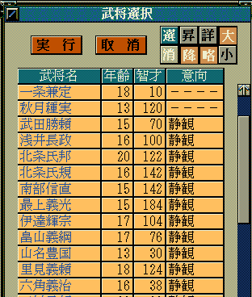
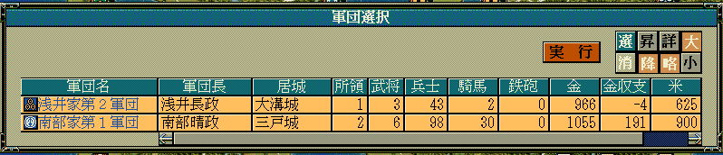
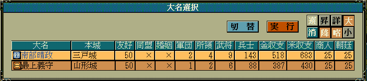
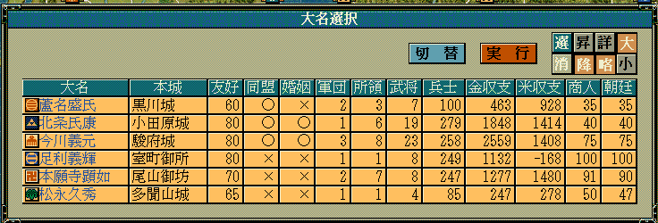
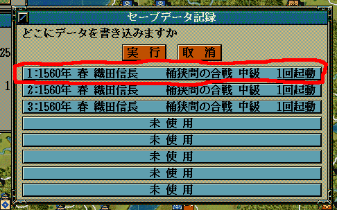
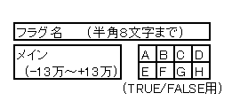

を追加した。
現在行われている戦争に参加した大名勢力はどこなのか？ についての情報を得るものとなる。
void カスタム::On_残りターン変更《戦争画面》(int 残りターン数) {
番号リスト型 dlist = Get_参戦の大名番号リスト【配列用】();
for each ( int iDaimyoID in dlist ) {
デバッグ出力 << "参戦大名番号【配列用】:" << iDaimyoID << endl;
デバッグ出力 << "大名:" << Get_名字( p大名情報[iDaimyoID].大名【武将番号】-1 ) << endl;
}
}
を追加した。
現在行われている戦争に参戦した軍団勢力はどこなのか？ についての情報を得る。
void カスタム::On_残りターン変更《戦争画面》(int 残りターン数) {
番号リスト型 glist = Get_参戦の軍団番号リスト【配列用】();
for each ( int iGundanID in glist ) {
デバッグ出力 << "参戦軍団番号【配列用】:" << iGundanID << endl;
int iBushouID = p軍団情報[iGundanID].軍団長【武将番号】-1;
if ( 0 <= iBushouID && iBushouID < 最大数::武将情報::配列数 ) {
デバッグ出力 << "軍団長:" << Get_名字(iBushouID)+Get_名前(iBushouID) << endl;
}
}
}
を追加した。
軍団の戦争への参戦立場 についての情報を得るものとなる。
void カスタム::On_残りターン変更《戦争画面》(int 残りターン数) {
番号リスト型 glist = Get_参戦の軍団番号リスト【配列用】();
for each ( int iGundanID in glist ) {
int iBushouID = p軍団情報[iGundanID].軍団長【武将番号】-1;
if ( 0 <= iBushouID && iBushouID < 最大数::武将情報::配列数 ) {
デバッグ出力 << "軍団長:" << Get_名字(iBushouID)+Get_名前(iBushouID) << endl;
}
// 軍団としての参戦立場を得る
int iTachiba = Get_軍団の参戦立場(iGundanID);
if ( iTachiba == 参戦立場::不明 ) {
デバッグ出力 << "立場:不明" << endl;
}
else if ( iTachiba == 参戦立場::攻撃軍 ) {
デバッグ出力 << "立場:攻撃軍" << endl;
}
else if ( iTachiba == 参戦立場::守備軍 ) {
デバッグ出力 << "立場:守備軍" << endl;
}
else if ( iTachiba == 参戦立場::攻撃の援軍 ) {
デバッグ出力 << "立場:攻撃の援軍" << endl;
}
else if ( iTachiba == 参戦立場::守備の援軍 ) {
デバッグ出力 << "立場:守備の援軍" << endl;
}
else if ( iTachiba == 参戦立場::中立軍 ) {
デバッグ出力 << "立場:中立軍" << endl;
}
デバッグ出力 << "------------------------" << endl;
}
}
を追加した。
武将の戦争への参戦立場 についての情報を得るものとなる。
void カスタム::On_残りターン変更《戦争画面》(int 残りターン数) {
if ( 残りターン <= 29 ) {
番号リスト型 blist = Get_出陣中の武将番号リスト【配列用】();
for each ( int iBushouID in blist ) {
デバッグ出力 << "武将姓名:" << Get_名字(iBushouID)+Get_名前(iBushouID) << endl;
// 武将としての参戦立場を得る
int iTachiba = Get_武将の参戦立場(iBushouID);
if ( iTachiba == 参戦立場::不明 ) {
デバッグ出力 << "立場:不明" << endl;
}
else if ( iTachiba == 参戦立場::攻撃軍 ) {
デバッグ出力 << "立場:攻撃軍" << endl;
}
else if ( iTachiba == 参戦立場::守備軍 ) {
デバッグ出力 << "立場:守備軍" << endl;
}
else if ( iTachiba == 参戦立場::攻撃の援軍 ) {
デバッグ出力 << "立場:攻撃の援軍" << endl;
}
else if ( iTachiba == 参戦立場::守備の援軍 ) {
デバッグ出力 << "立場:守備の援軍" << endl;
}
else if ( iTachiba == 参戦立場::中立軍 ) {
デバッグ出力 << "立場:中立軍" << endl;
}
デバッグ出力 << "------------------------" << endl;
}
}
}
を追加した。
現在の戦争中において、該当軍団の戦場における指揮者は誰なのか？ の情報を得るものとなる。
void カスタム::On_残りターン変更《戦争画面》(int 残りターン数) {
if ( 残りターン数 <= 29 ) {
番号リスト型 glist = Get_参戦の軍団番号リスト【配列用】();
for each ( int iGundanID in glist ) {
デバッグ出力 << "参戦軍団番号【配列用】:" << iGundanID << endl;
int iBushouID = Get_参戦軍団の指揮者(iGundanID);
if ( 0 <= iBushouID && iBushouID < 最大数::武将情報::配列数 ) {
デバッグ出力 << "指揮者:" << Get_名字(iBushouID)+Get_名前(iBushouID) << endl;
}
}
}
}
戦場にて、「ターン変更時」に指定武将が退却を試みるコマンドが加えられた。
を追加した。
この関数はUIやメッセージ吹き出しを伴うため、
On_残りターン変更《戦争画面》 イベントハンドラなど、
UIや吹き出しが出ても大丈夫なイベントハンドラ限定で使用可能である。
という、いかなる身分の武将でも正規手順にて死亡させることが可能な関数を追加した。
第2引数はあまり気にしなくても良く、特に指定する必要はない。
メイン画面では、通常下記のように、「On_軍団ターン変更」や、「On_プレイヤ担当ターン」など、
メイン画面の「ターン切り替わり目」系であれば安全に呼び出せる。
その他のタイミングは危険である。
void カスタム::On_プレイヤ担当ターン《メイン画面》() {
int iBushouID = Get_武将番号【配列用】("織田信長");
Set_武将状態《→死亡》(iBushouID);
}
void カスタム::On_軍団ターン変更《メイン画面》(int 軍団番号) {
int iBushouID = Get_武将番号【配列用】("毛利元就");
Set_武将状態《→死亡》(iBushouID);
}
戦争画面では、On_噴出メッセージ直前や
On_残りターン変更《戦争画面》時に安全に呼び出せる。
string カスタム::On_噴出メッセージ直前(string 武将名, string 元メッセージ, メッセージ関連情報型 メッセージ関連情報) {
// 混乱をしかけたら勝手に死亡。
if ( 武将名 == "真田幸隆" && Is_正規表現マッチ(元メッセージ, "そうやすやすとは|技をもってしても|分別がつかなく") ) {
int iBushouID = Get_武将番号【配列用】("真田幸隆");
Set_武将状態《→死亡》(iBushouID);
}
// 変更しない場合""
return "";
}
void カスタム::On_残りターン変更《戦争画面》(int 残りターン数) {
// ターン切り替わり時に今表示中の戦場マップの誰かが「フッ…」と死亡。
番号リスト型 list = Get_出陣中の武将番号リスト【配列用】《表示中マップ》();
if ( list.size() > 0 ) {
Set_武将状態《→死亡》(list[0]);
}
}
武将が戦場で死亡したからといって、突然、
p武将戸籍情報[i].状態 == 状態::死亡
になったりはしないので注意すること!!
天翔記の本来の動作でも、そのようなことにはならない。
武将が戦場で死亡した場合、
p武将戸籍情報[i].戦死 == TRUE
というように「一端戦死」という状態となり、
戦争が終わったタイミングで、初めて正式に、
p武将戸籍情報[i].状態 == 状態::死亡 となり、
代わりに、
p武将戸籍情報[i].戦死 == FALSE
と値がFALSEへと戻る。
フラグ関連の関数の返り値が、厳密過ぎて常に複雑な記述を強いられていたため
実用シーンを考慮して、簡易な記述で済む返り値とした。
の３つの返り値の仕様が変更となった。
これまで、「未定義のフラグ」や「フラグ確保失敗時」などの際には-0xFFFFが返ってきていたが、
運用がしづらいので、0を返すようにした。
ランダムな武将姓名、姫名を得る関数が追加された。
そのまま使えば、stringが返ってくるので、特に使い方を説明する必要はないだろう。
ランダム名字は3000パターンほどの武将名字から１つを選択。
ランダム名前は10000パターンほどの武将名前から１つを選択。
ランダム姫名は元々天翔記に存在する100パターンの仮想姫名から１つを選択。
の関数が実装された。
使い方、考え方は、他と同じ。
以上で、選択○○ダイアログ表示は、天翔記ゲーム中に存在するものは全て実装された。
は、いずれも「表示カラムを絞る」機能を持っている。
番号リスト型 ShowBushouList;
for ( int iBushouID=0; iBushouID < 最大数::武将情報::配列数; iBushouID++ ) {
// 死んでなければ
if ( p武将戸籍情報[iBushouID].状態 != 状態::死亡 ) {
// すでに誕生していて、20歳以下 (まだ誕生してない人も532枠に居ることもあるため。)
if ( 0 <= Get_武将年齢(iBushouID) && Get_武将年齢(iBushouID) <= 20 ) {
ShowBushouList.push_back(iBushouID);
}
}
}
int res = 選択武将ダイアログ表示(ShowBushouList, カラム::武将::年齢 | カラム::武将::意向 | カラム::武将::智才 );

考え方は、いずれも「選択軍団ダイアログ表示、選択大名ダイアログ表示」と同じなので、ここでは言及しない。
しかし、選択武将ダイアログについては、他と同じ「単数選択」だけではなく、「複数選択」タイプが存在する。
番号リスト型 ShowBushouList;
for ( int iBushouID=0; iBushouID < 最大数::武将情報::配列数; iBushouID++ ) {
// 死んでなければ
if ( p武将戸籍情報[iBushouID].状態 != 状態::死亡 ) {
ShowBushouList.push_back(iBushouID);
}
}
// 最大10人まで選択することが可能な選択武将ダイアログ。
番号リスト型 SelectedBushouList = 選択武将ダイアログ表示<10>(ShowBushouList);
for each ( int iSelectedBushouID in SelectedBushouList ) {
デバッグ出力 << iSelectedBushouID << endl;
}
関数が追加された。
考え方は、「選択大名ダイアログ表示」と完全に同じである。
有効な選択結果が得られない、もしくは、選択軍団ダイアログを表示出来ないようなものを引数とした場合、0xFFFFが返り値となる。
番号リスト型 myList;
myList.push_back(1); // 軍団番号【配列用】が1番という意味で追加
myList.push_back(10);// 軍団番号【配列用】が10番という意味で追加
int iSelectedGundanID = 選択軍団ダイアログ表示(myList);
if ( 0 <= iSelectedGundanID && iSelectedGundanID < 最大数::軍団情報::配列数 ) {
デバッグ出力 << "軍団番号【配列用】:" << iSelectedGundanID << "が選択された。" << endl;
} else {
デバッグ出力 << "選択しなかった。もしくは、myListに有効な軍団を指定しなかった" << endl;
}

通常は、軍団番号【配列用】を直接指定するといったことはしないだろう。
for ループを使いつつ、条件に一致する軍団を計算で出す形となるだろう。
そんな中で最も利用シーンが多いのが「自勢力の軍団リストを得る」といった形である。
それは以下のような形で簡単に得ることが可能だ。
番号リスト型 myList2;
int iDaimyoID = pターン情報.現在のターン【大名番号】-1;
myList2 = Get_大名麾下軍団番号リスト【配列用】( iDaimyoID );
int iSelectedDaimyoID2 = 選択軍団ダイアログ表示(myList2);
関数が追加された。
有効な選択結果が得られない。もしくは、選択大名ダイアログを表示出来ないようなものを引数とした場合、0xFFFFが返り値となる。
番号リスト型 myList;
myList.push_back(1); // 大名番号【配列用】が1番という意味で追加
myList.push_back(10);// 大名番号【配列用】が10番という意味で追加
int iSelectedDaimyoID = 選択大名ダイアログ表示(myList);
if ( 0 <= iSelectedDaimyoID && iSelectedDaimyoID < 最大数::大名情報::配列数 ) {
デバッグ出力 << "大名番号【配列用】:" << iSelectedDaimyoID << "が選択された。" << endl;
} else {
デバッグ出力 << "選択しなかった。もしくは、myListに有効な大名を指定しなかった" << endl;
}

通常は、大名番号【配列用】を直接指定するといったことはしないだろう。
for ループを使いつつ、条件に一致する大名を計算で出す形となるだろう。
そんな中で最も利用シーンが多いのが「ターン大名以外の有効な大名のリスト」といった形である。
それは以下のような形で簡単に得ることが可能だ。
番号リスト型 myList;
myList = Get_大名番号リスト【配列用】(FALSE); // FALSEを入れるとターン大名自身はリストから除外する。
int iSelectedDaimyoID2 = 選択大名ダイアログ表示(myList);
また、友好値が60以上の大名リストといったカスタマイズリストを得たいこともあるだろう。
そのような場合は、単純に for ループを使いつつ、条件に一致する大名を計算で出す形となる。
int myDaimyoID = pターン情報.現在のターン【大名番号】-1;
番号リスト型 orgList = Get_大名番号リスト【配列用】(FALSE);
番号リスト型 y60oList;
for each ( int iTargetDaimyoID in orgList ) {
if ( Get_友好関係( myDaimyoID, iTargetDaimyoID ) >= 60 ) {
y60oList.push_back(iTargetDaimyoID);
}
}
int iSelectDaimyoID = 選択大名ダイアログ表示(y60oList);

さらには、例えば「武田信玄のターン」でありながらも、 「足利義輝の治める国」の視点から見た大名リストを見せたいと思うかも知れない。
そういった場合は以下のようにする。
番号リスト型 myList;
myList = Get_大名番号リスト【配列用】();
int iSelectedDaimyoID2 = 選択大名ダイアログ表示(myList, カラム::大名::デフォルト, 30); // 30 は足利義輝の大名番号だと仮定した場合(実際には決め打ちではなく計算が必要)
現代の時代の「都道府県」情報と天翔記とをリンクさせるための関数が数点追加された。
該当の「城」が属する都道府県番号を返す。
返ってくる値は、「都道府県番号」である。
都道府県番号を都道府県名にする関数である。
返ってくる値は、都道府県番号に対応する都道府県の文字列である。
とある都道府県の「今日のリアルな天気」を得る関数である。
返ってくる値は、都道府県番号に対応する本日(その瞬間の現実の日時の該当の都道府県)の天気の文字列である。
{
// 城番号(配)→都道府県番号への変換
int 県番号 = Get_城都道府県番号(城配列番号::春日山城);
デバッグ出力 << "春日山城所在:" << Get_都道府県名(県番号) << endl; // 番号→文字列にしてModDebuggerへ出力
}
{
int 県番号 = Get_城都道府県番号(城配列番号::室町御所);
デバッグ出力 << "室町御所の場所の所在:" << Get_都道府県名(県番号) << endl; // 番号→文字列にしてModDebuggerへ出力
}
{
デバッグ出力 << "北海道(南部)の今日のリアル天気:" << Get_都道府県天気(都道府県::北海道) << endl;
デバッグ出力 << "沖縄の今日のリアル天気:" << Get_都道府県天気(都道府県::沖縄県) << endl;
// 城番号(配)→都道府県番号への変換
int 県番号 = Get_城都道府県番号(城配列番号::堺);
デバッグ出力 << "堺の場所の今日のリアルお天気:" << Get_都道府県天気(県番号) << endl;
}
とある年月日から「和暦」を得る関数が実装された。
1334年の「建武」の時代から、現在の「平成」の時代まで対応されている。
和暦型 wa1 = Get_和暦(); // 引数に何も指定しなかったら、進行ゲーム中の現在の西暦年が指定されたとみなす。
デバッグ出力 << wa1.元号 << endl;
デバッグ出力 << wa1.年 << endl; // 和暦上で何年かの「数値」
デバッグ出力 << wa1.年漢字 << endl; // 和暦上で何年かの「漢字」。
// 西暦1600年の和暦を出す。天翔記と同じで、年のどこかで元号が変わっていたとしたら、新元号が常に返ってくる。
和暦型 wa2 = Get_和暦(1600);
デバッグ出力 << wa2.元号 << endl;
デバッグ出力 << wa2.年 << endl; // 和暦上で何年かの「数値」
デバッグ出力 << wa2.年漢字 << endl; // 和暦上で何年かの「漢字」。
// 西暦1570年２月１日の和暦を出す。引数指定はあくまで西暦の新暦ベースであり旧暦ベースではない。
// 月を指定した場合は、天翔記より厳密な元号を弾き出すこととなるので、天翔記の画面上の表示とは当然ズレることがある。
和暦型 wa3 = Get_和暦(1570, 2, 1);
デバッグ出力 << wa3.元号 << endl; // 年号の文字列。
デバッグ出力 << wa3.年 << endl; // 和暦上で何年かの「数値」
デバッグ出力 << wa3.年漢字 << endl; // 和暦上で何年かの「漢字」。
以下のイベントハンドラや関数に渡す値、及び、渡ってくる値仕様が変更された。
これまでこれらの関数は、「TSMod.iniのBGM分布」や神パッチの「BGM分布」より１つ小さな値でやり取りされていた。
しかし、それでは常に１つずれた番号となるため、使用しづらい。
そこで、今バージョンからは、将来の使いやすさも見据えて、BGM分布番号と一致させた。
既存でBGM番号を数値にて直接指定して使用している場合は、指定番号の修正が必要となるので注意。
言葉遣い自動変格活用のAPIが追加された。
概ねこちらの概念を実装したものである。
これらのAPIは、不定な人物同士の会話メッセージを作成する際に、「自分・相手」の呼称や、語尾変化等をサポートするAPIです。
後述のソース中の、i1stBushouID, i2ndBushouID を、様々な武将で試し、一体どのような概念なのか理解して使いましょう。
男性・女性、上司・部下、年寄と若君主、様々な職業など、考慮されたメッセージへと変格活用されます。
非常に多数の関数に渡るため、ここでは、１つ１つピックアップしない。
言葉遣い情報型.hと、言葉遣い情報型.cppの中身を眺めて、なんとなく把握してください。
int i1stBushouID = Get_武将番号【配列用】(顔番号::武田晴信); // 武田信玄
int i2ndBushouID = Get_武将番号【配列用】(顔番号::武田信繁); // 武田信繁
if ( 0 <= i1stBushouID && i1stBushouID < 最大数::武将情報::配列数 && 0 <= i2ndBushouID && i2ndBushouID < 最大数::武将情報::配列数 ) {
string message1 = ％相手％(i1stBushouID, i2ndBushouID)+"、商人に\x0A"
"米を売"+％りましょう％(i1stBushouID, i2ndBushouID);
string message2 = ％ははは％(i1stBushouID, i2ndBushouID)+"、"+％相手％(i1stBushouID, i2ndBushouID)+"\x0A"
"一度の失敗では\x0A"
"懲りぬよう"+％です％(i1stBushouID, i2ndBushouID)+％な（２）％(i1stBushouID, i2ndBushouID);
string message3 = "おのれ、"+％罵倒相手％(i1stBushouID, i2ndBushouID)+"\x0A"
"覚えておれ！";
デバッグ出力 << message1 << endl;
デバッグ出力 << endl;
デバッグ出力 << message2 << endl;
デバッグ出力 << endl;
デバッグ出力 << message3 << endl;
}
１人称と２人称の関係により、以下のようにメッセージが変格する。
信繁、商人に 米を売ろう ははは、信繁 一度の失敗では 懲りぬようじゃな おのれ、信繁 覚えておれ！
兄上、商人に 米を売りましょう ははは、兄上 一度の失敗では 懲りぬようですな おのれ、晴信 覚えておれ！
政虎様、商人に 米を売りましょう わはは、政虎様 一度の失敗では 懲りぬようですな おのれ、くそ坊主 覚えておれ！
セーブデータにも反映されるフラグ管理のためのAPIが追加された。
全てのフラグは0で初期化されているので、わざわざSet_フラグで初期値を設定する必要がありません。
(初期化してしまうと、実際にはそのフラグを利用しなかったとしてもセーブデータに残ってしまうので注意。)
Get_フラグとDelete_フラグは、存在しないフラグ名を問い合わせると、「0」という値が返ってきます。
フラグはセーブデータへと保存されるため、無限数ではありません。
ScenarioModや一般Modで「セーブデータ１スロットあたり合計で3000ラベル」使うことが出来ます。
(セーブデータのスロットとは、下図の赤い四角。８つのスロットがある。)

一般のフラグで連想するものとは異なり、ScenarioModでは、より高度なフラグ機能を有しており、
「１つのフラグ名で９つの値」を管理することが出来ます。
概念図は以下。
１つのフラグ名に、普通の数値を入れられる「メイン枠」、TRUE/FALSEのみを入れられる「Ａ枠～Ｈ枠」の合計９つの値が管理できる。

これにより、非常に大きな、隔年に渡るようなイベントであっても、複数のフラグ名を使うようなことは無く、
1つのフラグ名で、管理できます。
フラグ名が迂闊に他者と被らないように、フラグラベルの最初の３文字程度はご自身のハンドル的な名前を付けておきましょう
Set_フラグ("TJP_EV01", 23 ); // フラグ名"TJP_EV01"のメイン枠に23という値を入れる。
Set_フラグ("TJP_EV01", TRUE, フラグ枠::Ｃ ); // フラグ名"TJP_EV01"のＣ枠にTRUEを入れる。
/* 存在しないフラグ(Set_フラグしたことが無いフラグ)名を問い合わせた(Get_フラグした)際はFALSE(=0)が返ってくる。
*/
//フラグ名"TJP_EV01"のフラグ枠::メインに23という値が入ってるか？ 比較演算子を省略しないこと。
if ( Get_フラグ("TJP_EV01") == 23 ) {
// ～
}
// フラグ枠::Ａ～Ｈについては、TRUE/FALSEと比較する。
if ( Get_フラグ("TJP_EV01", フラグ枠::Ｃ ) == <font color="red">TRUE</font> ) {
// ～
}
// フラグ名はScenarioMod、一般Modでみんなで共通で使って3000個まで。いわば共通資源。<br>
// セーブデータにフラグ状態を保存する必要がなくなったら、不要になったら消滅・解放すること。
Delete_フラグ("TJP_EV01");